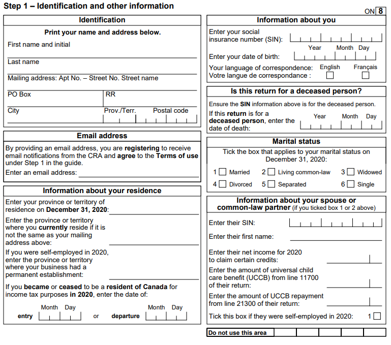
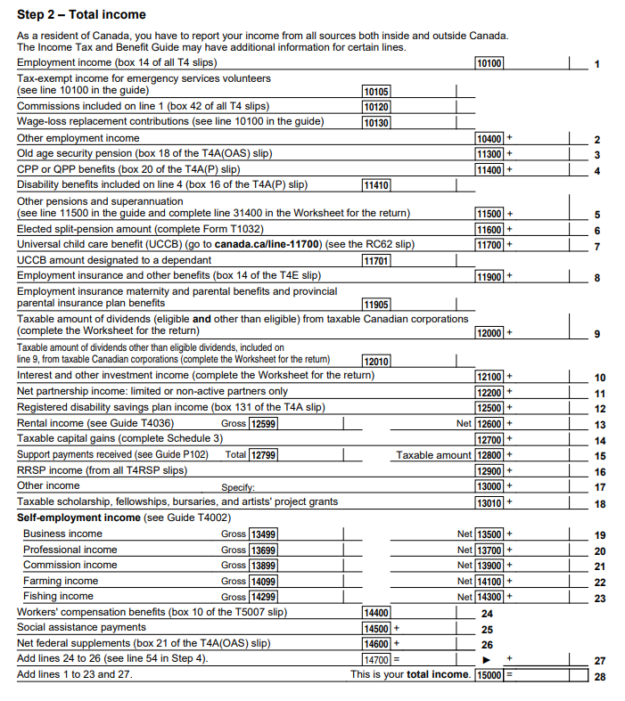
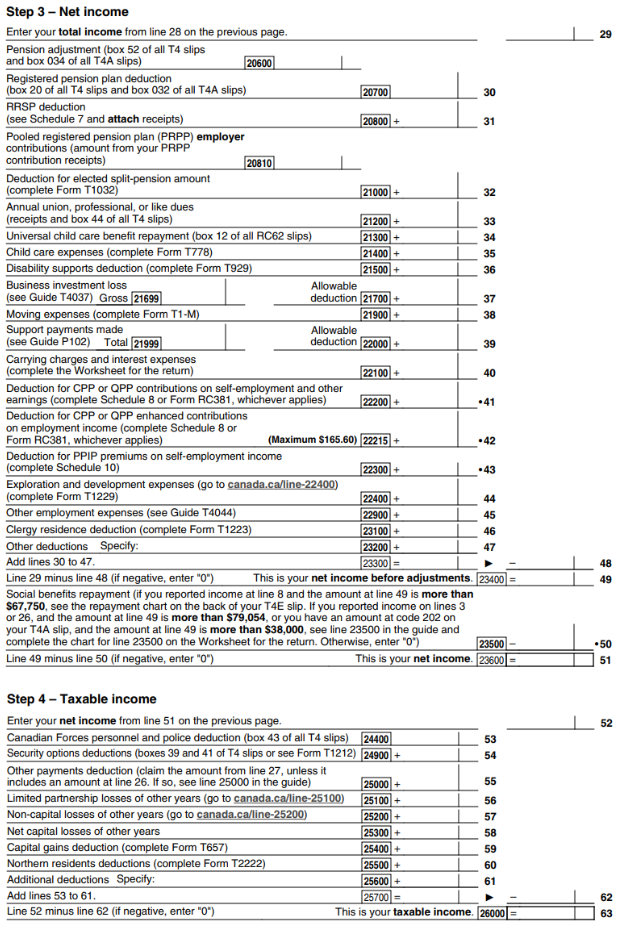
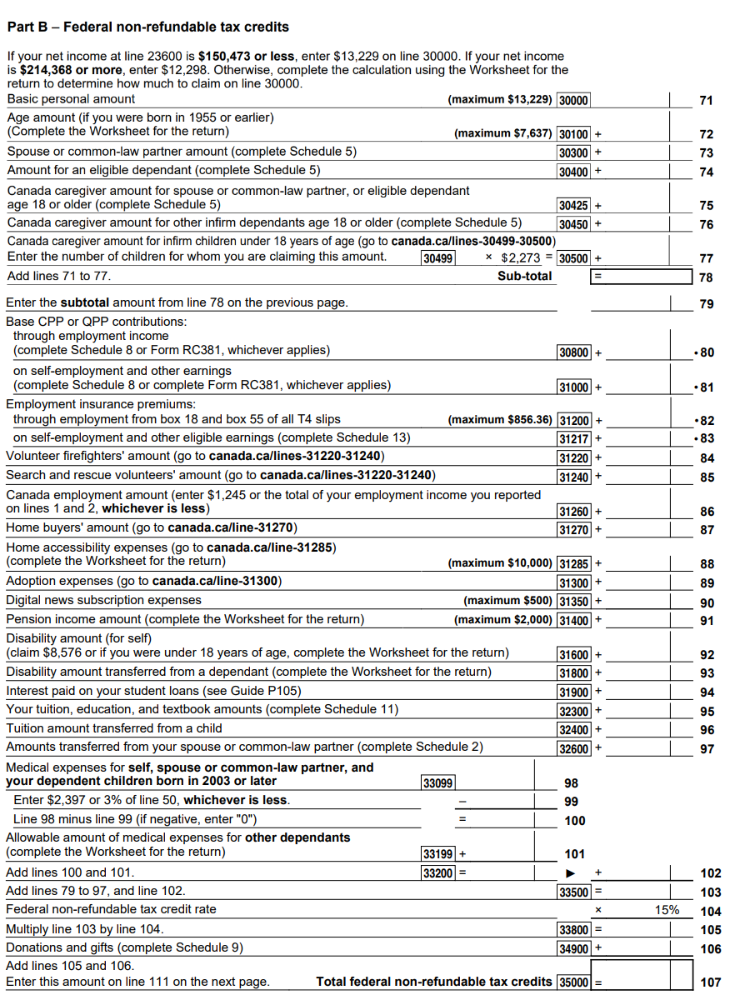
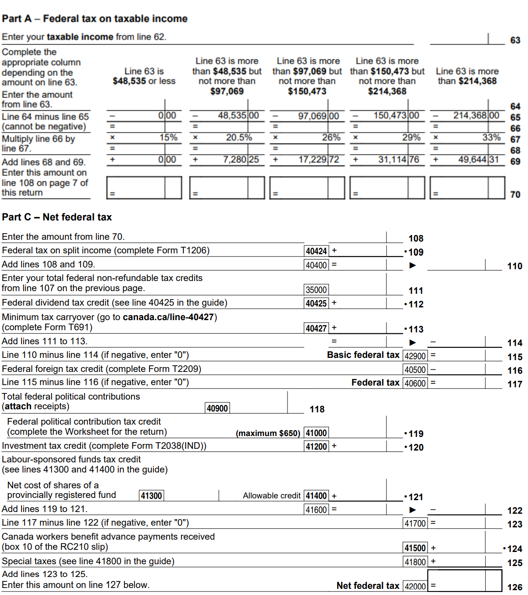
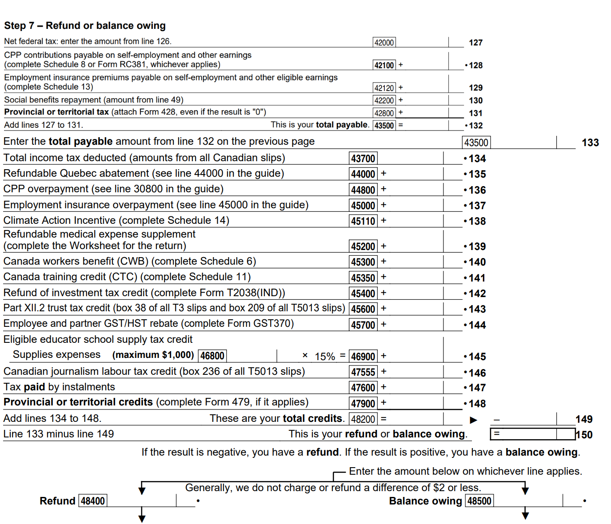

Completing a basic tax return - Learn about your taxes
Learn about your taxes
Completing a basic tax return
An introduction into filling out a Canadian tax and benefits return for the first time.
Basics of a tax return lesson complete
The seven steps for all tax returns, and how to file electronically.
Introduction
- This lesson includes:
- 1 test yourself question
- Time to complete: about 4 minutes
Avoid pressing the back button or reloading the page during the lesson.
You may now:
Resources: Basics of a tax return
Basics of a tax return (part 1 of 4)
Seven steps of the tax return
There are seven steps to completing your income tax and benefit return. This structure is the same for simple tax situations and complex ones. Knowing the basic steps and seeing how they connect will help you do your taxes, whether you use a paper return or file electronically using certified tax software.
Definition for: Income tax and benefit return
If you do your taxes electronically, please note that the certified tax software you use may not show all the individual steps shown below. The software calculates continuously as you enter more information.
Basics of a tax return (part 2 of 4)
What are the seven steps
Step 1: Identification and other information
Enter personal information about yourself so the Canada Revenue Agency (CRA) can identify you and accurately calculate the benefits and credits you may be entitled to.
Step 2: Total income
Report your income from all sources that you earned or received during the year. The taxes you might owe are calculated based on your income.
Step 3: Net income
Claim various deductions to reduce your total income to your net income.
- Total income
- minus Deductions
- equals Net income
Definition for: Deductions
Definition for: Net income
Step 4: Taxable income
Claim other deductions to further reduce your net income to your taxable income.
- Net income
- minus Deductions
- equals Taxable income
Definition for: Taxable income
Step 5: Federal tax
Calculate the federal tax you owe on your taxable income by using your taxable income, the applicable tax rate and the non‑refundable tax credits you 're entitled to.
- Taxable income
- multiplied by Federal tax rate
- minus Federal non-refundable tax credits
- equals Federal tax
Note: Federal tax will show up as Net federal tax on the paper return.
Definition for: Tax rate
Definition for: Non-refundable tax credits
Step 6: Provincial or territorial tax
Calculate the provincial or territorial tax you owe on your taxable income by following a similar calculation as done in step 5.
- Taxable income
- multiplied by Provincial or territorial tax rate
- minus Provincial or territorial non-refundable tax credits
- equals Provincial or territorial tax
Step 7: Refund or balance owing
Determine the final result of your tax return by subtracting your total credits from your total payable. You will either be entitled to a refund or have a balance owing.
- Total payable
- minus Total credits
- equals Refund or balance owing
Definition for: Total credits
Definition for: Total payable
Definition for: Refund
Definition for: Balance owing
Basics of a tax return (part 3 of 4)
Filing your tax return electronically
There are many certified tax software you can choose from to do your taxes, some of which are free, and each is a bit different. When using a software, you will answer some questions at the start of the process about your personal situation. Some software make suggestions based on the questions you answered, while others do not provide suggestions and require you to enter certain amounts yourself.
Most software guide you through the process so you do not miss out on any deductions, credits or benefits that you may be entitled to. However, it is always a good idea to know what is available to make sure you are not missing out.
If you are using certified tax software to do your taxes, it will do the calculations for you automatically and may not show the individual steps.
Most software advise you of any issues or errors with your tax return so you can correct them before submitting the return to the CRA. Although the software does the calculations for you, you are ultimately responsible for the tax return that you submit, so it is important to understand how the calculations are completed.
Resources are available
After you finish this lesson, these resource links will be available:
- Full list of available certified tax software
- What you may be entitled to claim
Test yourself
Sorry, that is incorrect.
It is easy to do your taxes electronically, and the software does most of the work for you. Most software guide you through the process, and some make suggestions based on your answers to the questions about your personal situation.
That is correct.
Answer: "No"
It is easy to do your taxes electronically, and the software does most of the work for you. Most software guide you through the process, and some make suggestions based on your answers to the questions about your personal situation.
Basics of a tax return (part 4 of 4)
Doing your taxes every year
It is very important to do your taxes every year, even if you had no income in the year.
The CRA can still determine if you are entitled to a tax refund or any benefit and credit payments, like the goods and services tax / harmonized sales tax (GST/HST) credit or the Canada Child Benefit.
Definition for: GST/HST credit
Definition for: Canada Child Benefit (CCB)
Fast fact
If you are registered for My Account and are using certified tax software, you can use Auto-fill my return when doing your taxes. Auto-fill my return lets you automatically fill in parts of your tax return with information that the CRA has available. This means you do not have to manually enter all of the information from your slips.
When using this service, make sure the CRA has all of your slips on file and the information is correct.
Providing your personal information lesson completed
What kind of persona information do you need to provide, and why it's important for the information to be accurate and up-to-date.
Introduction
- This lesson includes:
- 1 test yourself question
- Time to complete: about 9 minutes
Avoid pressing the back button or reloading the page during the lesson.
You may now:
What's included
- Why provide information about yourself: Start this lesson
- Importance of updating your personal information
- Providing your name, address and social insurance number
- Providing your date of birth, language of correspondence and email address
- Providing your province or territory of residence
- Providing your marital status
- Registering with Elections Canada
- Test yourself on the information you provide
- Other questions you may need to answer
- Entering personal information on your tax return
Resources: Providing your personal information lesson completed
Providing your personal information (part 1 of 10)
Why provide information about yourself
When you fill out your income tax and benefit return, you must provide personal information so the Canada Revenue Agency (CRA) can identify you and accurately calculate the benefits and credits you may be entitled to.
Definition for: Income tax and benefit return
This is Step 1 in filling out your tax return.
The CRA uses the information you provide in Step 1 of your tax return to send you important mail and to calculate certain benefits. Incorrect or incomplete information can cause delays or inaccurate calculations, so it is important to provide the information to the best of your knowledge.
Providing your personal information (part 2 of 10)
Importance of updating your personal information
Remember: Be sure to update your information with the CRA before you do your taxes.
For information on why it is important to keep your information up-to-date, take the lesson: Ways to file your taxes in Preparing to do your taxes.
Resources are available
After you finish this lesson, these resource links will be available:
- Updating your personal information
- Contacting the CRA
The CRA ensures your information is kept confidential.
Providing your personal information (part 3 of 10)
Providing your name, address and social insurance number
Full name
You must provide your first and last name.
If you are using certified tax software to do your taxes, the name you put on your tax return must match what is on file with the CRA. To change your name, please contact the CRA by phone or by mail.
Resources are available
After you finish this lesson, this resource link will be available:
- Contacting the CRA
Example: Reporting your name
Charles Bélanger-Chapleau filed their first tax return using their full name. They must now use this same name every year, unless they contact the CRA to change it. Using only "Charles Bélanger" may create problems in the CRA's system.
Mailing address
You must provide your complete mailing address. You can update your mailing address on My Account or by contacting the CRA.
Social insurance number (SIN)
You must provide your SIN, which is a nine-digit number (for example, 111‑111‑111) that identifies you for income tax purposes. It also allows you to work in Canada and receive benefits and services from the government.
Your SIN is unique, personal and confidential. However, you must provide your SIN to your employer, your financial institution and certain government departments.
Providing your personal information (part 4 of 10)
Providing your date of birth, language of correspondence and email address
Date of birth
You must provide your complete date of birth. The CRA uses your date of birth to check your identity.
The CRA must have your complete date of birth on record for you to submit your return electronically. You can contact the CRA to confirm what information is on file before doing your taxes electronically.
Language of correspondence
You must choose either English or French. The CRA communicates with you in the official language of your choice.
Email address
Enter your email address if you would like to receive some of your CRA correspondence electronically through My Account instead of by regular mail. If you choose this option, the CRA will email you to tell you when correspondence is waiting for you in your My Account.
Providing your personal information (part 5 of 10)
Providing your province or territory of residence
You must indicate your province or territory of residence on December 31 of the tax year for which you are filing a return. This is usually the province or territory where you were living, but it may be different if you were living away from your usual home.
Definition for: Tax year
Your province or territory of residence determines what benefits and credits are available to you and what provincial or territorial tax rate you are subject to, as these are decided by the provinces and territories. If you are using certified tax software to do your taxes, the software will fill out the appropriate forms and schedules for your province or territory of residence based on information you enter as you complete your return.
Definition for: Tax rate
Definition for: Schedules
Example: Living away from your usual home
Lucy usually resides in Nova Scotia but was going to school in Alberta. They should indicate that their province of residence was Nova Scotia.
Providing your personal information (part 6 of 10)
Providing your marital status
You must indicate your marital status on December 31 of the tax year. This information is used to determine your eligibility for certain benefits and tax credits and calculate the amounts you may be entitled to.
Definition for: Tax credits
Married
You have a spouse. This term only applies to a person you are legally married to
Living common-law
You live in a conjugal relationship with another person who is not your spouse, and at least one of the following applies:
- you and the other person have lived together for at least 12 continuous months
- Note: in this definition, 12 continuous months includes any period where you were separated for less than 90 days because of a breakdown in the relationship
- you have a child with the other person, naturally or through adoption, no matter how long you have been living together
- the other person has custody and control of your child (or had custody and control immediately before the child turned 19 years of age), and the child completely depends on the other person for support
Definition for: Conjugal relationship
Definition for: Support
Widowed
Your spouse or common-law partner has passed away.
Divorced
You are legally divorced from your former spouse and are not in a new relationship that would result in one of the other noted marital status on December 31.
Separated
You have been living separate and apart from your spouse or common-law partner for at least 90 consecutive days due to a breakdown in your relationship.
Single: None of the above marital statuses apply to you
Example: Roommates
Cheyenne and Abigail lived together as roommates for several years. They reported their marital status as single on their tax returns as they did not live together in a marriage-like relationship.
Example: Birth of your child
Malaia and Ariyan are in a marriage-like relationship and they moved into an apartment together in October. When their baby was born in November, they were considered common-law right away. They updated their marital status with the CRA and reported their marital status as common-law on their tax returns.
Providing your personal information (part 7 of 10)
Registering with Elections Canada
You must indicate if you have Canadian citizenship and, if so, whether you want the CRA to share your information with Elections Canada. This is an easy way to keep your voter registration up to date or add your name to the Register of Future Electors.
Providing your personal information (part 8 of 10)
Test yourself on the information you provide
Sorry, that is incorrect.
You must provide your complete date of birth.
The CRA does not have access to your mother's maiden name and does not require it to process your tax return.
Sorry, that is incorrect.
Your SIN is used to identify you for income tax purposes.
The CRA does not have access to your mother's maiden name and does not require it to process your tax return.
Sorry, that is incorrect.
You must provide your complete mailing address.
The CRA does not have access to your mother's maiden name and does not require it to process your tax return.
That is correct.
Answer: "Your mother's maiden name"
The CRA does not have access to this information and does not require it to process your tax return.
Providing your personal information (part 9 of 10)
Other questions you may need to answer
Entering or leaving Canada
If you became a resident of Canada in the tax year, you must provide your date of entry. If you left Canada in the tax year and became a resident of another country, enter the date of departure.
Residing on the settlement lands of Aboriginal governments
In some provinces and territories, you are required to answer one or more questions to identify whether or not you resided on the settlement lands of an Aboriginal government on December 31 of the tax year.
These Aboriginal governments are:
- Nisga'a Lisims Government (in British Columbia)
- Nunatsiavut Government (in Newfoundland and Labrador)
- Tłı̨chǫ (Tlicho) Government and Délı̨nę K’aowǝdó Kǝ (Deline Got’ine) Government (in the Northwest Territories)
- eleven self-governing Yukon First Nations
Questions about residence on settlement lands will not appear on the tax return for provinces or territories not listed above.
Fast fact
The CRA uses the terms "Aboriginal governments" and "Indian" because they have a legal meaning in the Indian Act.
Exempt income
You must indicate whether or not you have any income that is exempt from tax under section 87 of the Indian Act.
Providing your personal information (part 10 of 10)
Entering personal information on your tax return
If you are using certified tax software to do your taxes, you enter your personal information at the start of the process. Based on the responses you provide, the software determines if more information is required before moving to the next step. The software may also use the information you provide in this section to determine if you are eligible for certain tax credits or if other forms need to be completed.
Example: How your personal information can determine eligibility
While doing their taxes using certified tax software, Ruman indicated they are married and a resident of Ontario. Their marital status prompted the software to ask them for their spouse’s SIN and net income. Their province of residence prompted the software to ask additional questions related to Form ON-BEN, Application for the Ontario Trillium Benefit and Ontario Senior Homeowners’ Property Tax Grant, because this form applies only to residents of Ontario.
Below is an example of what the identification and other information page looks like on the tax return:
Example
Is this form hard to read? Don't worry, we will provide you with a link to the PDF (hi-res) version after this lesson.
Resources are available
After you finish this lesson, this resource link will be available:
- T1 Income package
Reporting your income lesson complete
What is income and income slips and how to report it on your return.
Introduction
- This lesson includes:
- 3 test yourself questions
- Time to complete: about 13 minutes
Avoid pressing the back button or reloading the page during the lesson.
You may now:
Resources : Reporting your income
Reporting your income (part 1 of 8)
What is income
Income is amounts you earn or receive during the tax year through salary, social benefits, property, investments or professional activities. You could also receive amounts other than your salary from your employer, such as tips or occasional earnings from a second job.
Example: What is considered income
Malika has a summer job as a food delivery driver. The money they earn, including tips, is considered their income.
This is Step 2 in filling out your tax return.
In Step 2 of your income tax and benefit return, you must report your income from all sources for the tax year. This includes income from all sources inside and outside Canada. The total of these amounts is known as your total income.
Definition for: Income tax and benefit return
Definition for: Report
Definition for: Total income
The taxes that you might owe are calculated based on your income. The Canada Revenue Agency (CRA) operates several review programs to make sure that your income is reported correctly. If you do not report all of your income, you may have to pay penalties and interest as well as the tax you should have paid on the missing income.
Resources are available
After you finish this lesson, this resource link will be available:
- Review programs
Reporting your income (part 2 of 8)
What is an information slip
Most income you receive will be reported on an information slip, sometimes also called a tax slip. This is a tax document given to you by whoever paid you the income, such as your employer or financial institution. Your income information is reported on the slip in numbered boxes that each refer to a specific line on the tax return. Each information slip also has instructions about where to report the amounts on your tax return.
Different types of income are reported on different slips, so you might receive multiple slips if you had more than one source of income.
Resources are available
After you finish this lesson, this resource link will be available:
- Types of information slips
Even though not all your income will be reported on an information slip, such as tips or occasional earnings, you are still responsible for reporting it on your tax return. You should keep track of all the money you earn throughout the year, especially tips that are not recorded on your paystubs, so you are ready at tax time.
For information on common information slips, take the lesson: Documents you will need in Preparing to do your taxes.
Reporting your income (part 3 of 8)
When and how you get your information slips
Most issuers must send you your slip by the end of February following the tax year. They can send you a physical or digital copy, but both formats contain the same information. If you have an online account with the issuer, you may be able to view your slips online.
Definition for: Issuers
Example: Getting a T4 from your employer(s)
Elijah worked for 2 different employers last year. Elijah knew their employment income will be reported on a T4 slip, Statement of Remuneration Paid. Since Elijah worked for more than one employer during the year, they will receive a T4 slip from each of them.
The issuer must send a copy of your slip to the CRA. This means you can also access your slips through My Account, if you are registered for this service. You can register for My Account after you have filed your taxes for the first time.
Definition for: My Account
Test yourself
Sorry, that is incorrect.
Kasem will receive a paystub for the last shifts they worked, but their employer is only required to send them their T4 slip by the end of February following the tax year.
That is correct.
Answer: "No"
Kasem will receive a paystub for the last shifts they worked, but their employer is only required to send them their T4 slip by the end of February following the tax year.
Kasem should keep track of their income for the year to be sure they receive all of their slips for when they do their taxes. If they did not receive their T4 slip from their employer, they can check My Account to view the copy that was submitted to the CRA.
Reporting your income (part 4 of 8)
Common types of income
Employment income
If you earned or received income from your employer, such as salary, wages, commissions, bonuses, gratuities, tips or honoraria, you 'll receive a T4 slip. You will see the amount to report on your tax return in box 14.
Other employment income (including tips)
This amount most commonly includes tips and occasional earnings, such as from babysitting or other odd jobs. You won 't receive an information slip for these amounts if your employer does not track them.
You are responsible for reporting all income earned or received, including in cash, even if you did not receive an information slip.
Employment insurance and other benefits
If you received benefits from Service Canada, such as EI or tuition assistance, you 'll receive a T4E slip. You will see the amount to report on your tax return in box 14.
Interest and other investment income
If you received this type of income from your bank or financial institution, you 'll usually receive a T5 slip, Statement of Investment Income. It uses various box numbers to report income.
You may not receive a T5 slip if the amount is less than $50, but you must still report the income. You should check your financial statements to confirm if you received this type of income during the year.
Scholarships, fellowships, bursaries, and artists ' project grants
If you received any of these amounts during the year, you will receive a T4A slip. The full payments you received are shown in box 105. However, you may not need to report the entire amount on your tax return, depending on the type of scholarship received, what kind of education program you are enrolled in and whether you are in school full-time or part-time.
Resources are available
After you finish this lesson, this resource link will be available:
- Scholarship exemption that determines what amount of your scholarships is taxable
Reporting your income (part 5 of 8)
More common types of income
Social assistance payments
If you received social assistance, often from your provincial or territorial government, you 'll receive a T5007 slip. You will see the amount to report on your tax return in box 11.
While these payments are not taxable, you must report them on your tax return to make sure any benefits you may be entitled to are calculated correctly. You will claim an offsetting deduction for the same amount in the next step of the process so you don 't pay any tax on this income. If you are using certified tax software, it will automatically calculate the amount of this offsetting deduction.
Income from the platform economy
The platform economy includes income earned through online activities such as sharing accommodation, buying and selling or providing freelance services. Income can also be earned through revenue from advertisements or product promotion through videos or pictures. If you participate in the platform economy, then you are likely considered to be self-employed and running a business. There is a self-employment income section on the tax return where you should report this amount.
Test yourself
That is correct.
Answer: "Yes"
Jamie is responsible for reporting income from all sources on their tax return. This is true even though Jamie was paid in cash and did not receive a T4 slip. They should have tracked their income so that they were ready at tax time.
Sorry, that is incorrect.
Jamie is responsible for reporting income from all sources on their tax return. This is true even though Jamie was paid in cash and did not receive a T4 slip. They should have tracked their income so that they were ready at tax time.
Reporting your income (part 6 of 8)
Other income situations
Tax-exempt income
If you are registered or entitled to be registered as an Indian under the Indian Act (IA) and your income is exempt from tax under section 87 of the IA, it is important to do your taxes every year, even if your exempt income is not reported on the tax return. This lets the CRA determine if you are entitled to a tax refund or to any benefit and credit payments.
You may also need to complete Form T90, Income Exempt From Tax Under the Indian Act, so the CRA can calculate your Canada training credit limit and your Canada workers benefit, if applicable. This form may also be used to calculate your family 's provincial or territorial benefits.
Definition for: Canada training credit
Definition for: Canada workers benefit
Fast fact
The CRA uses the term "Indian" because it has a legal meaning in the Indian Act.
Amounts that are not taxed
Certain amounts earned or received are non-taxable. You do not need to report these as income on your tax return. Non‑taxable amounts include most lottery winnings, most gifts and inheritances, and payments from programs like the GST/HST credit and the Canada child benefit.
Resources are available
After you finish this lesson, this resource link will be available:
- Amounts that are not taxed
Definition for: GST/HST credit
Definition for: Canada child benefit
Example: Money received for your birthday
Benoît 's grandparents gave them $100 for their birthday. This amount does not need to be reported as income on Benoît 's tax return because it is not taxable and is not used to calculate their benefits and credits.
Individuals with no income
If you did not make any money during the year, you do not need to enter any information in this section of the tax return.
Reporting your income (part 7 of 8)
Entering income on your tax return
Before doing your taxes, you must gather all available information about your income. This includes all of your information slips, as well as details about any income not reported on a slip, such as occasional earnings.
If you did not receive a slip in time to do your taxes, talk to the issuer first. You can also access your slips in My Account or by contacting the CRA. If you cannot get a copy of your slip, you can estimate your income using your paystubs or other financial statements.
Example: Income earned as cash
Pablo worked at a restaurant as a server and received a T4 slip showing $8,000 of employment income in box 14. Pablo 's employer did not track cash tips, so these were not reported on Pablo 's paystubs or T4 slip. However, Pablo kept a record of what tips they received and knows the total amount was $1,000 for the year. When Pablo did their taxes, they entered the box numbers from their T4 slip and the information about their tips into the certified tax software.
It is important to note that certain box numbers are for reference purposes only and do not need to be reported on the tax return, as they are already included in another amount. As shown below in the example of a T4 slip, box 14 includes amounts also shown in certain other boxes.
Using tax software to enter income
If you are using certified tax software to do your taxes, the software asks you questions about your income. Each software is different. Some may ask if you had certain types of income, what specific slips you have, or if you have any income not reported on a slip. You have to enter the amounts shown in the boxes of your slips, as well as information about any income not shown on a slip. The software adds up the amounts for the same income types and puts the total on the appropriate lines.
Test yourself
That is correct.
Answer: "$7,000"
The $500 shown in box 30 on the T4 slip from Company A is already included in box 14. The software does not include it when calculating Han’s income and enters only $7,000 as employment income.
You can view a copy of the back of a T4 slip to see all the income that you do not report on your tax return
Resources are available
After you finish this lesson, this resource link will be available:
- T4 Statement of Remuneration Paid (slip)
Sorry, that is incorrect.
You must provide your complete date of birth.
The $500 shown in box 30 on the T4 slip from Company A is already included in box 14. The software does not include it when calculating Han’s income and enters only $7,000 as employment income.
You can view a copy of the back of a T4 slip to see all the income that you do not report on your tax return
Resources are available
After you finish this lesson, this resource link will be available:
- T4 Statement of Remuneration Paid (slip)
Below is an example of the total income calculation page of the tax return:
Example
Is this form hard to read? Don't worry, we will provide you with a link to the PDF (hi-res) version after this lesson.
Resources are available
After you finish this lesson, this resource link will be available:
- T1 Income package
Reporting your income (part 8 of 8)
Using tax software to enter your income
After you enter all of your income information, the certified tax software calculates your total income.
It is your responsibility to make sure that you review the information you have entered into the certified tax software before you submit your tax return to the CRA. For example, if you worked for two employers during the year, check that the sum of your employment income is as shown in the software.
Claiming your deductions lesson complete
What are deductions, where do they come from and how to enter them on your tax return.
Introduction
- This lesson includes:
- 3 test yourself questions
- Time to complete: about 9 minutes
Avoid pressing the back button or reloading the page during the lesson.
You may now:
Claiming your deductions (part 1 of 4)
What are deductions
Deductions are certain expenses and other amounts that you subtract from your total income or your net income when you fill out your income tax and benefit return . Because the taxes you owe are calculated using your income, deductions reduce the amount of tax that you may have to pay. Some deductions reduce your net income and others reduce your taxable income.
Definition for: Income tax and benefit return
Definition for: Taxes
Definition for: Net income
Definition for: Taxable income
This is part of Step 3 and Step 4 in filling out your tax return.
Step 3: Net income
- Total income
- minus Deductions
- equals Net income
Step 4: Taxable income
- Net income
- minus Deductions
- equals Taxable income
The calculation of your net income is step 3 of your tax return, the calculation of your taxable income is step 4. If you are using certified tax software, it does these calculations for you automatically.
The Canada Revenue Agency (CRA) uses your net income to calculate the benefits and credits you may be eligible for, such as the Canada child benefit and the GST/HST credit. Your net income is also used to calculate certain tax credits in a later step on the tax return.
Definition for: Canada child benefit
Definition for: GST/HST credit
Your taxable income is used to calculate how much federal and provincial or territorial tax you may have to pay.
Example: The impact of a deduction
Haru has a total income of $22,000 and paid $300 for union dues, which are shown in box 44 on their T4 slip, Statement of Remuneration Paid. Haru can claim their union dues as a deduction on their tax return.
When Haru enters all the amounts from their T4 slip into the certified tax software, the software calculates a deduction for the union dues. Because this deduction is claimed in step 3 of the tax return, it reduces Haru 's net income to $21,700 ($22,000 total income minus the $300 deduction). Haru does not claim any deductions in step 4 of the tax return, so their taxable income is also $21,700.
Claiming your deductions (part 2 of 4)
Common types of deductions
Registered pension plan (RPP) contributions
An RPP is a pension plan that your employer sets up and registers with the CRA. The purpose of an RPP is to provide you with a pension when you retire.
Usually, your employer deducts your RPP contributions from your pay cheque on a regular basis, and the total amount is shown in box 20 of your T4 slip. It may also appear on other receipts, as well as in box 32 of a T4A slip, Statement of Pension, Retirement, Annuity, and Other Income.
If you are using certified tax software to do your taxes, you enter the amount shown on your information slips or receipts, and the software enters the total on the correct line.
Registered retirement savings plan (RRSP) contributions
An RRSP is a retirement savings and investment plan that individuals can make contributions to. Deductible RRSP contributions can be used to reduce your tax.
Resources are available
After you finish this lesson, this resource link will be available:
- RRSPs
Your financial institution reports the amount of your contributions on a contribution receipt, which it usually issues in March of the following tax year.
You will need to know the amount of your contributions and your RRSP deduction limit for the year. You can find your RRSP deduction limit on your My Account or on your latest notice of assessment. If you are using certified tax software to do your taxes, the software may ask you if you want to claim a deduction for the contributions. It will then calculate (on a Schedule 7, RRSP, PRPP, and SPP Unused Contributions, transfers, and HBP or LLP Activities) your deduction and enter it on the correct line.
Fast fact
There is no age minimum to contribute to an RRSP. You can open an RRSP when you are young to start saving for your future. Generally, you can contribute to your RRSP when you have available RRSP deduction limit room, until December 31 of the year you turn 71.
Union dues
Union dues are contributions that members make to their union to help fund the union 's activities. Usually, your employer deducts your union dues from your pay cheque on a regular basis, and the total amount is shown in box 44 of a T4 slip. It may also appear on other receipts.
If you are using certified tax software to do your taxes, you will enter the amount shown on your slips or receipts, and the software will enter the sum on the correct line.
Child care expenses
Child care expenses are amounts you pay for someone to look after an eligible child so you can do certain activities, such as working, running a business, or attending school (including carrying on research).
Resources are available
After you finish this lesson, this resource link will be available:
- Full eligibility criteria and conditions for child care expenses
Test yourself
That is correct.
Answer: "Yes"
Naya can claim the child care expenses because the expenses were paid for an eligible child so Naya could go to work.
Sorry, that is incorrect.
Naya can claim the child care expenses because the expenses were paid for an eligible child so Naya could go to work.
Claiming your deductions (part 3 of 4)
More common types of deductions
Moving expenses
You may be able to claim certain moving expenses you paid in the year if both of the following apply:
- you moved to work or to run a business, or you moved to study as a full-time student enrolled in a post-secondary program at a university, college or other educational institution
- you moved at least 40 kilometres closer to your new work or school
If you are using certified tax software to do your taxes, it may ask if you have any moving expenses. The software may also ask you about your move or your expenses to confirm you are eligible for the deduction. It will then calculate (on a Form T1-M, Moving Expenses Deduction) your deduction and enter it on the correct line.
Test yourself
Sorry, that is incorrect.
Sebastien moved only 30 kilometres closer to their new school, so they do not meet the eligibility criteria for claiming moving expenses as a deduction.
That is correct.
Answer: "No"
Because they did not move at least 40 kilometres closer to the university, they cannot claim the moving expenses as a deduction.
Other payments deduction
You should calculate the other payments deduction for the following types of non-taxable income:
- workers ' compensation benefits
- social assistance payments
- net federal supplements
If you are using certified tax software, it will automatically calculate the other payments deduction based on the amounts you have reported for the three types of income listed above. Generally, the deduction is equal to the sum of these income amounts. However, this may not be the case if net federal supplements are reported.
Northern residents deductions
The northern residents deductions consists of two parts:
- a residency deduction (for living costs)
- a deduction for travel benefits you received from your employer
You may qualify if you lived in a prescribed northern zone (Zone A) or prescribed intermediate zone (Zone B) on a permanent basis a continuous period of at least six consecutive months. This period can begin or end in the tax year.
Resources are available
After you finish this lesson, this resource link will be available:
- Full eligibility criteria and conditions for the northern residents deductions
If you are using certified tax software to do your taxes, it may recognize that you lived in a prescribed zone based on the address that you entered at the start of the process. It may also ask if you want to claim the northern residents deductions. You may need to answer additional questions to determine if you are eligible to claim these expenses and to calculate the amount you can claim. The software will then calculate (on a Form T2222, Northern Residents Deduction) your deduction and enter it on the correct line.
Test yourself
Sorry, that is incorrect.
Your taxable income is used to calculate the taxes that you owe, so lowering your taxable income also lowers the amount you may have to pay.
That is correct.
Answer: "No"
Your taxable income is used to calculate the taxes that you owe, so lowering your taxable income also lowers the amount you may have to pay.
Claiming your deductions (part 4 of 4)
Entering deductions on your tax return
If you are using certified tax software to do your taxes, the software may use information you entered earlier in the process and ask you questions to determine which deductions you may be able to claim. For example, if you indicated that you have a child at the start of the process, the software may ask you questions about your child care expenses.
The software will do all the calculations for you on the tax return and on any necessary forms. If you enter amounts shown on your information slips, such as RPP contributions in box 20 of a T4 slip, the software will take those amounts and enter them on the correct lines.
Once you have entered all information applicable to your tax situation, the certified tax software will calculate all the deductions applicable to you. It will automatically calculate your net income and your taxable income by subtracting your deductions from your total income.
Definition for: Total income
It is your responsibility to make sure that you review the information you have entered into the certified tax software before you submit your tax return to the CRA. For example, if you claimed child care expenses, check that this deduction is displayed on the appropriate line number.
Below is an example the net income and taxable income calculation pages of the tax return:
Example
Is this form hard to read? Don't worry, we will provide you with a link to the PDF (hi-res) version after this lesson.
Resources are available
After you finish this lesson, this resource link will be available:
- T1 Income package
Claiming your non-refundable tax credits lesson complete
What are non-refundable tax credits, and how can they help lower the amount of taxes you may owe.
Introduction
- This lesson includes:
- 3 test yourself questions
- Time to complete: about 12 minutes
Avoid pressing the back button or reloading the page during the lesson.
You may now:
Resources : Claiming your non-refundable tax credits
Claiming your non-refundable tax credits (part 1 of 5)
What are non-refundable tax credits
Non-refundable tax credits are amounts you claim to lower the amount of taxes you might owe. But if the total of these credits is more than the amount of taxes you owe, you will not get a refund for the difference.
This is part of Step 5 and Step 6 in filling out your tax return.
Step 5: Federal tax
- Taxable income
- multiplied by Federal tax rate
- minus Federal non-refundable tax credits
- equals Federal tax
Step 6: Provincial or territorial tax
- Taxable income
- multiplied by Provincial or territorial tax rate
- minus Provincial or territorial non-refundable tax credits
- equals Provincial or territorial tax
Test yourself
Sorry, that is incorrect.
Non-refundable tax credits can only reduce the amount of taxes you owe. Amir will not receive a refund for the difference.
That is correct.
Answer: "No"
Non-refundable tax credits can only reduce the amount of taxes you owe. Amir will not receive a refund for the difference.
These are different from refundable tax credits, which reduce the amount you owe first and any remaining credit is refunded to you. Refundable tax credits are calculated at the end of the tax return, which is Step 7.
If you are using certified tax software to do your taxes, it will do the calculations for you automatically and may not show the individual steps.
Claiming your non-refundable tax credits (part 2 of 5)
More about what are non-refundable tax credits
You claim federal non-refundable tax credits to reduce your federal tax owing. Many of these credits have an equivalent that reduces your provincial or territorial tax owing. These credits will usually have the same eligibility criteria. Some provinces and territories may also have other non‑refundable tax credits you can claim. To learn what credits are offered in your province or territory, resource links will be available after you finish this lesson.
Some non-refundable tax credits are based on your personal situation, while others are related to your employment income or expenses you may have paid during the year.
The value of each non-refundable tax credit varies between tax years. They are adjusted each year to allow for inflation and other factors.
Definition for: Inflation
The total of your non-refundable tax credits is multiplied by the rate that each federal, provincial, or territorial government apply on non-refundable tax credits. This means that you can claim a certain percentage of each credit. This percentage is pre-determined by each government. The resulting amount lowers the taxes you owe on your income.
Example: Calculating your non-refundable tax credits
Isaiah can claim $20,000 of federal non-refundable tax credits. The federal non-refundable tax rate is 15%. The amount that will lower the taxes they owe on their income is calculated like this:
$20,000 multiplied by 15% equals $3,000
If Isaiah owes $4,000 of federal tax on their income, their non‑refundable tax credits will reduce this amount:
$4,000 minus $3,000 equals $1,000
Some non-refundable tax credits may be less if you are not a resident of Canada for the entire tax year. This page covers the non-refundable tax credits as if you were a resident for the entire tax year.
Claiming your non-refundable tax credits (part 3 of 5)
Common non-refundable tax credits
Basic personal amount
All individuals are eligible for this credit, and it is automatically calculated for you if you are using certified tax software. If your taxable income is below the basic personal amount, the taxes you owe on your income are reduced to zero.
Spouse or common-law partner amount
You can claim this credit if you supported your spouse or common-law partner during the tax year. You must reduce the amount of the credit based on their net income.
Definition for: Support(ed)
Definition for: Net income
If you are using certified tax software to do your taxes, it will ask you to confirm your marital status. The software will prompt you to answer questions about your spouse or common-law partner. It will then calculate (on a Schedule 5, Amounts for Spouse or Common-law Partner and Dependants) the credit amount and enter it on the correct line.
Example: Claiming the spouse or common-law partner amount
Sean and Sam are in a common-law relationship. Sam had no income to report on their tax return for last year. Sean can claim the full spouse or common-law partner amount since Sam did not have any income.
Amount for an eligible dependant
You may, under certain conditions, be able to claim this credit if you supported a dependant child or family member on your own. The amount of this credit is calculated using the dependant 's net income. To learn about the full eligibility criteria and conditions for the amount for an eligible dependant, resource links will be available after you finish this lesson.
Definition for: Dependant
For this credit, the dependant must also have been either:
- your parent or grandparent by blood, marriage, common-law partnership, or adoption
- your child, grandchild, brother or sister by blood, marriage, common-law partnership, or adoption and was under 18 years of age or had an impairment in physical or mental functions
If you are using certified tax software to do your taxes, you will need to indicate if you have any dependants. If you do, the software will then prompt you to answer questions to determine if you are eligible. It will then calculate (on a Schedule 5, Amounts for Spouse or Common-law Partner and Dependants) the credit amount and enter it on the correct line.
Example: Claiming the amount for an eligible dependant
Naya is single and lives alone with their one-year-old child. Naya can claim the full amount for an eligible dependant because they are single, they supported their child in a home that they maintained, and their child has no income. If the child has an income, Naya would have to subtract that income from the amount for eligible dependant.
Canada Pension Plan (CPP) or Quebec Pension Plan (QPP) contributions through employment income
You can claim this credit if you made CPP or QPP contributions during the year. Your employer deducts these amounts directly from your pay and reports them in box 16 or 17 of your T4 slip.
Definition for: T4 slip
If you are using certified tax software to do your taxes, you enter the amount shown on each T4 slip. The software will then complete a calculation using the amount of your contributions and your employment income and report the final amount on the correct line.
The software does this calcuation on one of the following forms, depending on your situation:
- Schedule 8, Canada Pension Plan Contributions and Overpayment
- Schedule 8, Quebec Pension Plan Contributions
- Form RC381, Inter-Provincial Calculation for CPP and QPP Contributions and Overpayments
Employment insurance (EI) premiums through employment
You can claim this credit if you contributed to EI during the year. Your employer deducts these amounts directly from your pay and reports them in box 18 of your T4 slip.
If you are using certified tax software to do your taxes, you enter the amount shown on each T4 slip. The software will then report them on the correct line.
Canada employment amount
You can claim this amount if you report employment income. This credit provides recognition for work-related expenses.
Most certified tax software will automatically calculate the amount you are entitled to based on your employment income. The software will then report the amount on the correct line.
Test yourself
Sorry, that is incorrect.
The basic personal amount is automatically calculated for residents of Canada. It is not shown on your T4 slip.
EI premiums and CPP/QPP contributions are deductions your employer takes from your pay. You will see these amounts reported on your pay stubs and on your T4 slip.
That is correct.
Answer: "EI premiums and CPP/QPP contributions"
Both of these amounts are deductions your employer takes from your pay. You will see these amounts reported on your pay stubs and on your T4 slip.
Sorry, that is incorrect.
You can only claim the amount for an eligible dependant if you meet all the criteria. It is not shown on your T4 slip.
EI premiums and CPP/QPP contributions are deductions your employer takes from your pay. You will see these amounts reported on your pay stubs and on your T4 slip.
Claiming your non-refundable tax credits (part 4 of 5)
More common non-refundable tax credits
Tuition amount
You can claim this credit for eligible tuition fees paid to a recognized educational institution. Generally, this includes post‑secondary institutions, such as universities or colleges, or other educational institutions where you gain skills to develop your career, such as a trade school.
Resources are available
After you finish this lesson, this resource link will be available:
- Full eligibility criteria for tuition
You calculate the amount you can claim by using the information from the official tax receipt your educational institution sent you. This is most commonly Form T2202, Tuition and Enrolment Certificate. The receipt will show the tuition paid, as well as how many months you attended full-time or part-time. You should receive this slip by the end of February following the year you paid the tuition fees.
You must report your tuition amounts in the year they were paid so that the Canada Revenue Agency (CRA) can update your account. However, you may not need to use all your tuition credits to reduce the taxes you owe that year. This could happen if you had a low income and no taxes to pay.
If you don 't need to use all your tuition credits, you can choose to transfer unused credits from the current tax year, up to the allowable maximum to an eligible individual. This will help reduce the taxes the other individual owes.
Definition for: Maximum
- Maximum
- You may transfer a maximum of $5,000 of the current year’s federal tuition amount, minus the amount you used to reduce your tax owing. The provincial or territorial maximum varies.
Definition for: Eligible individual
- Eligible individual
-
They must be:
- your spouse or common-law partner
- your parent or grandparent, or your spouse 's or common-law partner 's parent or grandparent
Whether or not you choose to transfer your unused tuition credits, you can carry forward any unused credits until they are used up. You will need to claim those credits in the first year that you owe taxes. This could be once you start working full-time after you have graduated. Claiming these credits will reduce the taxes you owe on your income.
Definition for: Carry forward
If you are using certified tax software, you will need to indicate if you are a student with tuition amounts to claim. You will enter the information from your T2202, as well as any amounts carried forward from a previous year. The software will prompt you to answer questions, such as if you want to transfer an unused amount to an eligible individual (such as a parent or a legal guardian). The software will then calculate (on a Schedule 11, Federal Tuition, Education, and Textbook Amounts and Canada Training Credit) the amount to claim on your tax return and enter it on the correct line. This amount will either reduce the taxes you owe to zero or use up your available credits.
Example: Transferring eligible tuition credits
Shakira 's T2202 shows total tuition fees of $8,000 paid. Shakira did not have any income and so does not owe any tax. Because they do not need to use any of their tuition amount to reduce their taxes owing, Shakira can choose to transfer up to the maximum amount. Shakira choose to transfer the maximum $5,000 to one of their parents. The software indicates that Shakira has $3,000 ($8,000 minus $5,000) of credits to carry forward.
Medical expenses
You can claim this credit for eligible medical expenses paid for yourself, your spouse or common-law partner, and eligible dependants. These expenses include prescription drugs, eyeglasses, or hearing aids.
Resources are available
After you finish this lesson, this resource link will be available:
- Eligible medical expenses
You calculate the actual amount you can claim by deducting 3% of your net income (up to the annual maximum) from the amount of medical expenses paid.
Definition for: Annual maximum
- Annual maximum
-
A value that changes every year due to inflation. All certified tax software will have the current amount. You can also find it on the Canada Revenue Agency website.
Test yourself
That is correct.
Answer: "$2,100"
The software will complete a calculation using Sasha’s net income:
- 3% of net income
- $30,000 multiplied by 3% equals $900
- Expenses claimed minus $900
- $3,000 minus $900
- Equals allowable medical expenses
- $2,100
Sorry, that is incorrect.
Although the allowable maximum for the year is $2,400, the software will complete a calculation using Sasha’s net income:
- 3% of net income
- $30,000 multiplied by 3% equals $900
- Expenses claimed minus $900
- $3,000 minus $900
- Equals allowable medical expenses
- $2,100
Sorry, that is incorrect.
While Sasha spent a total of $3,000 on medical expenses last year, the software will complete a calculation using Sasha’s net income:
- 3% of net income
- $30,000 multiplied by 3% equals $900
- Expenses claimed minus $900
- $3,000 minus $900
- Equals allowable medical expenses
- $2,100
Disability amount
You may be able to claim this amount if you have a severe and prolonged impairment in physical or mental functions. To make the claim on your tax return, you must have applied and been approved for the disability tax credit (DTC). You may also be able to claim an amount transferred from a dependant who is eligible for the DTC. For more information about the DTC, resource links will be available after you finish this lesson.
If you are using certified tax software to do your taxes, you will need to indicate that you have a DTC approved by the CRA. Based on the responses you provide, the software will claim an amount on the correct line.
Fast fact
To apply for the DTC, you and your medical practitioner must complete the Form T2201, Disability Tax Credit Certificate . Once the form is completed and signed by both parties, you submit it to the CRA.
Claiming your non-refundable tax credits (part 5 of 5)
Claiming non-refundable tax credits on your tax return
If you are using certified tax software to do your taxes, the software may use information you entered earlier in the process and ask you questions to determine which non-refundable tax credits you may be able to claim.
The software will do all the calculations for you on the tax return and on any necessary forms.
It is your responsibility to make sure that you review the information you have entered into the certified tax software before you submit your tax return to the CRA.
Below is an example of what the calculation of your federal non‑refundable tax credits looks like on the tax return:
Example
Is this form hard to read? Don't worry, we will provide you with a link to the PDF (hi-res) version after this lesson.
Resources are available
After you finish this lesson, this resource link will be available:
- T1 Income tax package
Calculating your taxes lesson complete
Calculating your taxable income with the tax rate and applying the credits.
Introduction
- This lesson includes:
- 3 test yourself questions
- Time to complete: about 7 minutes
Avoid pressing the back button or reloading the page during the lesson.
You may now:
What's included
- How tax is calculated: Start this lesson
- Determining the amount of federal tax on your taxable income
- Examples of calculating tax in the first tax bracket
- Example of calculating tax in the third tax bracket li>Calculating your net federal tax
- Calculating your provincial or territorial tax
- How to enter tax calculations on your tax return
Resources : Calculating your taxes
Calculating your taxes (part 1 of 7)
How tax is calculated
Once you have established how much of your income is taxable, you will complete the tax calculations in step 5 and step 6 of the income tax and benefit return. These steps use taxable income, the tax rates that apply, and the tax credits you are entitled to claim. These amounts will determine how much federal and provincial or territorial taxes you might owe.
Definition for: Income tax and benefit return
Definition for: Taxable income
Definition for: Tax rate
Definition for: Tax credits
If you are using certified tax software to do your taxes, it will do the calculations for you automatically and may not show the separate steps.
Step 5: Federal tax
- Taxable income
- multiplied by Federal tax rate
- minus Federal non-refundable tax credits
- equals Federal tax
Step 6: Provincial or territorial tax
- Taxable income
- multiplied by Provincial or territorial tax rate
- minus Provincial or territorial non-refundable tax credits
- equals Provincial or territorial tax
Definition for: Non-refundable tax credits
Calculating your taxes (part 2 of 7)
Determining the amount of federal tax on your taxable income
Canada has a progressive income tax system, which means you pay more tax as your income increases.
The taxes you pay are determined by which of the five tax brackets your income falls into. A different tax rate applies to each tax bracket but only to the income within that bracket. The higher tax rate does not apply to all your taxable income. The same tax brackets are used for all types of income, such as employment income or occasional earnings.
Test yourself
Sorry, that is incorrect.
In this type of tax system, the larger your income is, the less tax you pay.
Canada has a progressive tax system. In this type of tax system, you pay a higher tax rate as your income increases. Each higher tax rate applies only to the income in its respective tax bracket.
That is correct.
Answer: "A progressive tax system"
In this type of tax system, you pay a higher tax rate as your income increases. Each higher tax rate applies only to the income in its respective tax bracket.
Sorry, that is incorrect.
In this type of tax system, you pay the same tax rate as everyone, no matter how much income you earn.
Canada has a progressive tax system. In this type of tax system, you pay a higher tax rate as your income increases. Each higher tax rate applies only to the income in its respective tax bracket.
The federal income tax rates apply to all provinces and territories.
Current federal tax rate and income tax brackets
Calculating your taxes (part 3 of 7)
Example of calculating tax in the first tax bracket
Giovanni 's taxable income was $10,000. Because they made less than $49,020, their income falls into the first tax bracket. The 2021 tax rate for this bracket is 15%.
When Giovanni does their taxes, the federal taxes he owes on their income are calculated like this:
- Giovanni pays taxes at 15% rate on their income of $10,000
- 15% multiplied by $10,000 equals $1,500
Calculating taxes on your taxable income is only the first step. Don 't worry, you will apply your non-refundable tax credits and refundable tax credits later in the process, which will reduce this amount.
Definition for: Refundable tax credits
Calculating your taxes (part 4 of 7)
Calculate your net federal tax
The next step is to calculate your non-refundable tax credits. You will then subtract your federal non-refundable tax credits from the total taxes you calculated on your income. The result of this calculation is your net federal tax.
Basic personal amount
The first federal non-refundable tax credit is the basic personal amount. The basic federal personal amount is $13,808 for the 2021 tax year. In general, anyone with a taxable income below this amount does not have to pay federal income tax.
Example: The basic personal amount
The federal taxes Giovanni calculated on their income will be completely eliminated, because they had taxable income of less than $13,808.
Maria will subtract the basic personal amount from the federal taxes they calculated on their income because their income is more than $13,808. They may be able to claim other non-refundable tax credits that will further reduce the taxes that they owe.
Your non-refundable tax credits are also multiplied by a non‑refundable tax credit rate. This means that you do not apply the full value of your non-refundable tax credits against the taxes you owe on your income. A percentage, pre-determined by the government, lowers the taxes you owe on your income.
Test yourself
That is correct.
Answer: "$3,000"
The tax calculated on Maria’s income will be reduced by a percentage of their non-refundable tax credits. This amount is calculated like this:
- $20,000 multiplied by 15% equals $3,000
Sorry, that is incorrect.
Maria 's federal non-refundable tax credits must be multiplied by the federal non-refundable tax rate.
The tax calculated on Maria 's income will be reduced by a percentage of their non-refundable tax credits. This amount is calculated like this:
- $20,000 multiplied by 15% equals $3,000
Calculating your taxes (part 5 of 7)
Example of calculating tax in the third tax bracket
Maria 's taxable income was $100,000. Because they made between $98,040 to $151,978, their income falls into the third tax bracket. The 2021 tax rate for this bracket is 26%. Maria will not pay taxes at the 26% rate on the whole $100,000 but will pay a different tax rate for each level of their income based on the federal income tax brackets.
When Maria does their taxes, the federal taxes they owe on their income are calculated like this:
- Maria pays taxes at 15% rate on the first $49,020
- 15% multiplied by $49,020 equals $7,353
- Maria pays taxes at 20.5% rate for the income between $49,020 and $98,040
- 20.5% multiplied by ($98,040 minus $49,020) equals $10,049
- Maria pays taxes at 26% rate for the income between $98,040 and $100,000
- 26% multiplied by ($100,000 minus $98,040) equals $509
- Maria calculates the total federal taxes owing on her $100,000 taxable income by adding the results from calculations 1 to 3
- $7,353 plus $10,049 plus $509 equals $17,911
Both Giovanni and Maria have calculated only the first part of the net federal tax calculation. The amounts calculated here will be reduced as the process continues.
Calculating your taxes (part 6 of 7)
Calculating your provincial or territorial tax
You 'll do a similar calculation to figure out the provincial or territorial taxes you might owe. The tax rates and income tax brackets are different from one province or territory to another.
Current provincial and territorial tax rate and income tax brackets
Resources are available
After you finish this lesson, this resource link will be available:
- Tax credits for provinces and territories
Calculating your taxes (part 7 of 7)
Entering tax calculations on your tax return
If you are using certified tax software to do your taxes, the software may use information you previously entered and ask you additional questions to calculate your net federal and your net provincial or territorial tax. The software will fill out the correct federal and provincial or territorial forms (the tax return itself and any schedules).
Definition for: Schedules
Test yourself
Sorry, that is incorrect.
The tax credits you are entitled to claim reduce the taxes you owe on your income.
You use your total taxable income to calculate how much tax you might owe no matter how many employers you worked for during the year.
Sorry, that is incorrect.
You multiply your taxable income by the tax rate that applies to determine how much tax you might owe.
You use your total taxable income to calculate how much tax you might owe no matter how many employers you worked for during the year.
That is correct.
Answer: "How many employers you work for"
You use your total taxable income to calculate how much tax you might owe no matter how many employers you worked for during the year.
Sorry, that is incorrect.
The tax rates that apply determine how much tax you might owe on your income.
You use your total taxable income to calculate how much tax you might owe no matter how many employers you worked for during the year.
Below is an example of what the federal tax calculation looks like on the tax return:
Example
Is this form hard to read? Don't worry, we will provide you with a link to the PDF (hi-res) version after this lesson.
Resources are available
After you finish this lesson, this resource link will be available:
- T1 Income tax package
Finding out if you get a refund or owe tax lesson complete
After calculating your tax amounts, you will find out if you get a refund or have a balance owing.
Introduction
- This lesson includes:
- 2 test yourself questions
- Time to complete: about 9 minutes
Avoid pressing the back button or reloading the page during the lesson.
You may now:
Resources : Finding out if you get a refund or owe tax
Finding out if you get a refund or owe tax (part 1 of 5)
Refund versus balance owing
In Step 7 of your income tax and benefit return, you use two amounts to determine the final result of your tax return.
Definition for: Income tax and benefit return
If you are using certified tax software to do your taxes, it will do the calculations for you automatically and may not show the separate steps.
Step 7: Refund or balance owing
- Total payable
- minus Total credits
- equals Refund or balance owing
The first amount is your total payable, which is the sum of all the amounts you owe. This is usually made up of your federal and provincial or territorial taxes.
The second amount is your total credits, which includes your refundable tax credits. Refundable tax credits reduce the amount you owe to zero first and, unlike non-refundable tax credits, any remaining credit is refunded to you.
Definition for: Non-refundable tax credits
The difference between these amounts is known as your refund, where the Canada Revenue Agency (CRA) owes you an amount, or your balance owing, where you must pay an amount to the CRA.
Definition for: Refund
Definition for: Balance owing
Finding out if you get a refund or owe tax (part 2 of 5)
Common amounts included in your total credits
Total income tax deducted
This amount represents the total income tax deducted directly from any of your sources of income. The most common example of this is the income tax your employer takes off of your pay. It is shown on your information slips, such as in box 22 of your T4 slip.
If you are using certified tax software to do your taxes, you enter the amount shown on all of your information slips, and the software will automatically enter the total on the correct line.
Canada Pension Plan (CPP) overpayment
This is an amount you can claim if you contributed more to the CPP than you had to during the year. This might happen if you worked for more than one employer during the year or if your employer deducted CPP contributions when you were under 18 years of age, when you were not required to contribute.
Certified tax software will automatically calculate how much you should have contributed to the CPP based on your income and give you a credit for any overpayment.
Employment insurance (EI) overpayment
You can claim this amount if you contributed more to EI than you had to for the year. This might happen if you worked for more than one employer during the year.
Certified tax software will automatically calculate how much you should have contributed to EI based on your income and give you a credit for any overpayment.
Finding out if you get a refund or owe tax (part 3 of 5)
More common amounts included in your total credits
Climate action incentive (CAI)
This amount is available to residents of Saskatchewan, Manitoba, Ontario, and Alberta, who are 18 or older. It includes a basic amount and a 10% supplement for residents of small and rural communities.
The amount you can claim is different between the four provinces. Also, it depends on your personal situation, such as if you have a spouse or a common-law partner or a dependant. To learn about the full eligibility criteria and conditions for the CAI, resource links will be available after you finish this lesson.
Each certified tax software is different. The software might automatically calculate this credit if you live in one of the four eligible provinces, or it may ask you if you would like to claim it. You may need to answer additional questions, such as whether or not you live in a small and rural community. The software will then calculate (on a Schedule 14, Climate Action Incentive) the amount you are entitled to and enter it on the correct line.
Example: Claiming the CAI
Murphy is an 18-year-old resident of Ontario who did their taxes electronically. Because they were a resident of Ontario, the software automatically calculated a credit of $300.
Canada workers benefit (CWB)
This amount is intended to supplement the earnings of low‑income workers and to be a work incentive for low-income Canadians. It includes a basic amount and a disability supplement if you are eligible for the disability tax credit.
The amount you can expect to receive for CWB depends on your income and where you live. To learn about the full eligibility criteria and conditions for the CWB, resource links will be available after you finish this lesson.
Each certified tax software is different. The software might automatically calculate this credit using information you previously entered, like your working income or your marital status, or you may need to indicate that you would like to claim it. The software will then calculate (on a Schedule 6, Canada Workers Benefit) the amount you are entitled to and enter it on the correct line.
Finding out if you get a refund or owe tax (part 4 of 5)
Provincial or territorial credits
You can claim these credits if your province or territory has additional refundable tax credits available that you are entitled to. To learn what credits are offered in your province or territory, resource links will be available after you finish this lesson.
If you are using certified tax software to do your taxes, it should automatically determine if you are entitled to any credits based on information you enter, such as your net income or your marital status, and complete any required forms or schedules.
Example: Claiming a provincial credit
Rory is a 19-year-old resident of British Columbia and is single. Their net income last year was $10,000. When they did their taxes, the software automatically calculated a BC sales tax credit of $75.
Are you a resident of Quebec?
If you lived in Quebec on December 31 of the tax year, you will have additional lines to complete on your tax return. You will also have to complete a separate provincial tax return for Revenu Québec. Some certified tax software will allow you to complete and submit both returns.
Definition for: Tax year
Resources are available
After you finish this lesson, these resource links will be available:
- Revenu Québec
- Filing a provincial return in Quebec
Tax transfer for residents of Quebec
This amount applies only to individuals who lived in Quebec on December 31 of the tax year. If you earned income outside Quebec during the year , you may transfer up to 45% of the income tax deducted from any of your sources of income outside Quebec to the Province of Quebec.
If you are using certified tax software to do your taxes, it will ask you if you would like to transfer any eligible amounts.
Refundable Quebec abatement
This amount allows most residents of Quebec on December 31 of the tax year to claim 16.5% of their basic federal tax as a credit.
If you are using certified tax software to do your taxes, it will automatically calculate this credit if you are eligible.
Test yourself
That is correct.
Answer: "Yes"
Your total credits will first reduce your amounts owing, but any excess amount will be refunded to you. Aiguo does not owe anything, so they will receive the full amount of their CAI as a refund.
Sorry, that is incorrect.
Your total credits will first reduce your amounts owing, but any excess amount will be refunded to you. Aiguo does not owe anything, so they will receive the full amount of their CAI as a refund.
Finding out if you get a refund or owe tax (part 5 of 5)
Calculating a refund or balance owing on your tax return
If you are using certified tax software to do your taxes, it may use information you previously entered to calculate your total payable and your total credits. For example, if it calculated the taxes you owe in previous steps based on your taxable income and the non-refundable tax credits you claimed.
If the certified tax software needs any extra information to complete a calculation or another form, it may ask you more questions based on the required form.
Once the certified tax software has finalized the amounts, it subtracts your total credits from your total payable:
- If the result is negative (below zero), you are entitled to a refund for the difference.
- If the result is positive (above zero), you have a balance owing for the difference.
Test yourself
Sorry, that is incorrect.
Sophia 's total credits will reduce their total payable.
Since their total credits is more than their total payable, they are entitled to a refund for the difference. Sophia can expect a refund of $100.
That is correct.
Answer: "Refund of $100"
Since their total credits is more than their total payable, they are entitled to a refund for the difference.
Sorry, that is incorrect.
Their final result is calculated by subtracting their total credits from their total payable.
Since their total credits is more than their total payable, they are entitled to a refund for the difference. Sophia can expect a refund of $100.
It is your responsibility to make sure that you review the information you have entered into the certified tax software before you submit your tax return to the CRA. For example, if you worked for two employers during the year, you want to check that the income tax deducted found on both T4 slips is shown on the correct line.
Below is an example of what the calculation of a refund or balance owing looks like on the tax return:
Example
Is this form hard to read? Don't worry, we will provide you with a link to the PDF (hi-res) version after this lesson.
Resources are available
After you finish this lesson, this resource link will be available:
- T1 Income tax package
Quiz: Completing a basic tax return
If you have finished the above lessons, you can take the quiz.
Show the quiz: Completing a basic tax return Hide the quiz: Completing a basic tax return
Your results:
- Completed 0123456789101112131415 of 15 questions
- Answered 0123456789101112131415 of the questions correctly
Quiz: Completing a basic tax return (15 questions)
Put your knowledge to the test.
Question 1
Sorry, that is incorrect.
While you may need to complete additional calculations, the basic steps to complete a tax return remain the same whether your tax situation is simple or complex.
That is correct.
Answer: "No, the steps do not change"
While you may need to complete additional calculations, the basic steps to complete a tax return remain the same whether your tax situation is simple or complex.
Question 2
Sorry, that is incorrect.
Your SIN has nine digits.
Sorry, that is incorrect.
Your SIN has nine digits.
Sorry, that is incorrect.
Your SIN has nine digits.
That is correct.
Answer: "Nine"
Question 3
Sorry, that is incorrect.
Although Jolene is still be legally married, their marital status changes to separated once they have been living apart from their spouse because of a breakdown in the relationship for at least 90 consecutive days and they have not reconciled.
That is correct.
Answer: "Separated"
Jolene has been living apart from their spouse because of a breakdown in the relationship for at least 90 consecutive days and they have not reconciled.
Sorry, that is incorrect.
Although Jolene is no longer with their spouse, this status does not apply because they were legally married.
Jolene 's marital status changes to separated once they have been living apart from their spouse because of a breakdown in the relationship for at least 90 consecutive days and they have not reconciled.
Question 4
That is correct.
Answer: "Yes"
The CRA uses your personal information to identify you and accurately calculate what benefits and credits you may be entitled to. Incorrect or incomplete information can cause delays or inaccurate calculations, so it is important to provide information to the best of your knowledge.
Sorry, that is incorrect.
The CRA uses your personal information to identify you and accurately calculate what benefits and credits you may be entitled to. Incorrect or incomplete information can cause delays or inaccurate calculations, so it is important to provide information to the best of your knowledge.
Question 5
Sorry, that is incorrect.
You don 't need to be a tax expert to do your own taxes.
Auto-fill my return automatically fills in parts of your tax return with information that the CRA has available at the time of the request. You must be registered for My Account to use this service.
Sorry, that is incorrect.
This is not the name of a service the CRA offers.
Auto-fill my return automatically fills in parts of your tax return with information that the CRA has available at the time of the request. You must be registered for My Account to use this service.
Sorry, that is incorrect.
It 's important to do your taxes every year to be sure you 're receiving all of the benefits and credits you might be entitled to.
Auto-fill my return automatically fills in parts of your tax return with information that the CRA has available at the time of the request. You must be registered for My Account to use this service.
That is correct.
Answer: "Auto-fill my return"
Auto-fill my return automatically fills in parts of your tax return with information that the CRA has available at the time of the request. You must be registered for My Account to use this service.
Question 6
Sorry, that is incorrect.
Certain types of income, such as tips or occasional earnings, are not shown on an information slip. However, you are still responsible for reporting these amounts on your tax return.
That is correct.
Answer: "No"
Certain types of income, such as tips or occasional earnings, are not shown on an information slip. However, you are still responsible for reporting these amounts on your tax return.
Question 7
Sorry, that is incorrect.
You may not receive an information slip for your tips if your employer does not track them, or if you received them in cash, but you must still report the income on your tax return.
Certain amounts are non-taxable and do not need to be reported as income on your tax return. This includes most lottery winnings, most gifts and inheritances, and payments from programs like the GST/HST credit and the Canada child benefit.
That is correct.
Answer: "Benefit payments from programs like the GST/HST credit"
Certain amounts are non-taxable and do not need to be reported as income on your tax return. This includes most lottery winnings, most gifts and inheritances, and payments from programs like the GST/HST credit and the Canada child benefit.
Sorry, that is incorrect.
You may not receive an information slip if you earned less than $50 of interest during the year, but you must still report the income on your tax return.
Certain amounts are non-taxable and do not need to be reported as income on your tax return. This includes most lottery winnings, most gifts and inheritances, and payments from programs like the GST/HST credit and the Canada child benefit.
Sorry, that is incorrect.
If you earned or received income from your employer during the year, they will give you a T4 slip. You must report this income on your tax return.
Certain amounts are non-taxable and do not need to be reported as income on your tax return. This includes most lottery winnings, most gifts and inheritances, and payments from programs like the GST/HST credit and the Canada child benefit.
Question 8
Sorry, that is incorrect.
In certain circumstances, you can claim amounts paid to have someone look after an eligible child as a deduction.
You cannot claim an external disk for a personal computer as a deduction on your tax return.
Sorry, that is incorrect.
You can claim certain moving expenses as a deduction if you meet the eligibility criteria.
You cannot claim an external disk for a personal computer as a deduction on your tax return.
That is correct.
Answer: "An external disk for a personal computer"
This is not a deduction you can claim on your tax return.
Sorry, that is incorrect.
You can claim contributions you made to your union a deduction.
You cannot claim an external disk for a personal computer as a deduction on your tax return.
Question 9
That is correct.
Answer: "Yes"
Deductions are certain expenses and other amounts subtracted from your total or net income. Because the taxes you owe are calculated using your income, lowering your taxable income reduces the amount of tax you might have to pay.
Sorry, that is incorrect.
Deductions are certain expenses and other amounts subtracted from your total or net income. Because the taxes you owe are calculated using your income, lowering your taxable income reduces the amount of tax you might have to pay.
Question 10
Sorry, that is incorrect.
This is true for all non-refundable tax credits.
The basic personal amount is a non-refundable tax credit that can be claimed by all individuals. The purpose of the basic personal amount is to fully reduce the federal income tax of individuals with taxable income below this amount. It also partially reduces the federal income tax of individuals with taxable income above this amount.
Sorry, that is incorrect.
The purpose of the basic personal amount is to fully reduce the federal income tax of individuals with taxable income below this amount. It also partially reduces the federal income tax of individuals with taxable income above this amount.
Sorry, that is incorrect.
The basic personal amount is a non-refundable tax credit that can be claimed by all individuals. The purpose of the basic personal amount is to fully reduce the federal income tax of individuals with taxable income below this amount. It also partially reduces the federal income tax of individuals with taxable income above this amount.
That is correct.
Answer: "Any individual can claim this credit"
The basic personal amount is a non-refundable tax credit that can be claimed by all individuals. The purpose of the basic personal amount is to fully reduce the federal income tax of individuals with taxable income below this amount. It also partially reduces the federal income tax of individuals with taxable income above this amount.
Question 11
Sorry, that is incorrect.
Non-refundable tax credits can only reduce the tax Samira owes to zero, and any excess amount will not be refunded.
That is correct.
Answer: "No"
Non-refundable tax credits can only reduce the tax Samira owes to zero, and any excess amount will not be refunded.
Question 12
Sorry, that is incorrect.
Riku 's income falls into the second tax bracket, so a different rate is used for each income threshold.
Canada has a progressive tax system, which means you pay more tax as your income increase. However, each tax rate applies only to the income within that bracket.
That is correct.
Answer: "Riku pays taxes at 15% rate on the first $49,020 and at 20.5% on the income between $49,020 and $98,040"
Canada has a progressive tax system, which means you pay more tax as your income increase. However, each tax rate applies only to the income within that bracket.
Sorry, that is incorrect.
Riku 's income falls into the second tax bracket, so a different rate is used for each income threshold.
Canada has a progressive tax system, which means you pay more tax as your income increase. However, each tax rate applies only to the income within that bracket.
Sorry, that is incorrect.
Riku 's taxable income was calculated by subtracting certain deductions from their net income.
Canada has a progressive tax system, which means you pay more tax as your income increase. However, each tax rate applies only to the income within that bracket.
Question 13
Sorry, that is incorrect.
Each province or territory determines their own tax rate.
That is correct.
Answer: "No"
Each province or territory determines their own tax rate.
Question 14
That is correct.
Answer: "Yes"
The final step of the tax return is subtracting your total credits from your total payable. If you the result is positive, you are entitled to a refund. This could happen if you paid more tax during the year than you actually owe, or if you are entitled to any refundable tax credits.
Sorry, that is incorrect.
The final step of the tax return is subtracting your total credits from your total payable. If you the result is positive, you are entitled to a refund. This could happen if you paid more tax during the year than you actually owe, or if you are entitled to any refundable tax credits.
Question 15
Sorry, that is incorrect.
You claim a credit for the total income tax that was deducted directly from any of your sources of income, such as from your bi-weekly pay from your employer. If too much tax was deducted, the only way to receive it as a credit is to do your taxes.
You don 't claim the GST/HST credit on your tax return, but you must do your taxes to receive payments from this program, if you qualify.
Sorry, that is incorrect.
If you contributed more to EI than you had to during the year, the only way to receive a credit for the overpayment is to do your taxes.
You don 't claim the GST/HST credit on your tax return, but you must do your taxes to receive payments from this program, if you qualify.
Sorry, that is incorrect.
If you reside in one of the provinces that offers this credit and you meet the eligibility criteria, the only way to receive it is to do your taxes.
You don 't claim the GST/HST credit on your tax return, but you must do your taxes to receive payments from this program, if you qualify.
That is correct.
Answer: "GST/HST credit"
The goods and services tax / harmonized sales tax (GST/HST) credit is a tax-free quarterly payment that helps individuals and families with low and modest incomes offset the GST or HST that they pay. You don 't claim this credit on your tax return, but you must do your taxes to receive payments from this program, if you qualify.